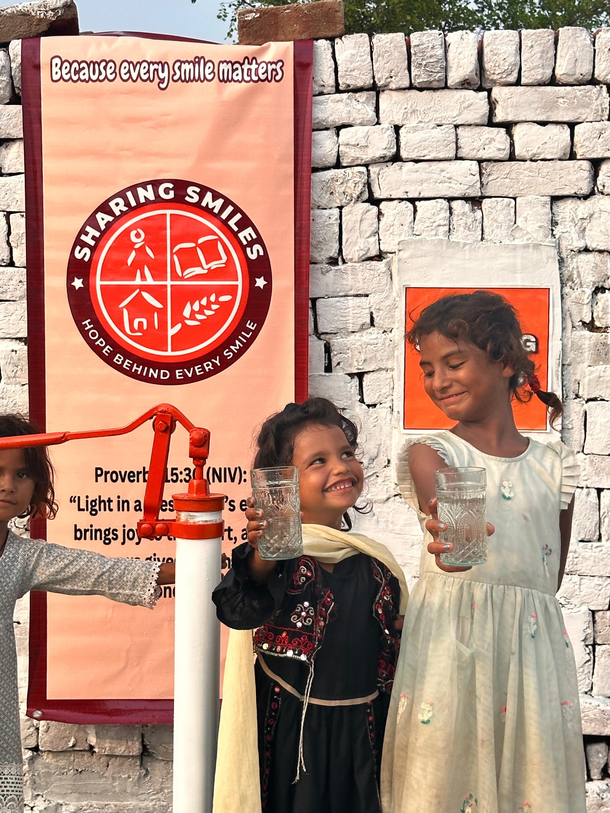
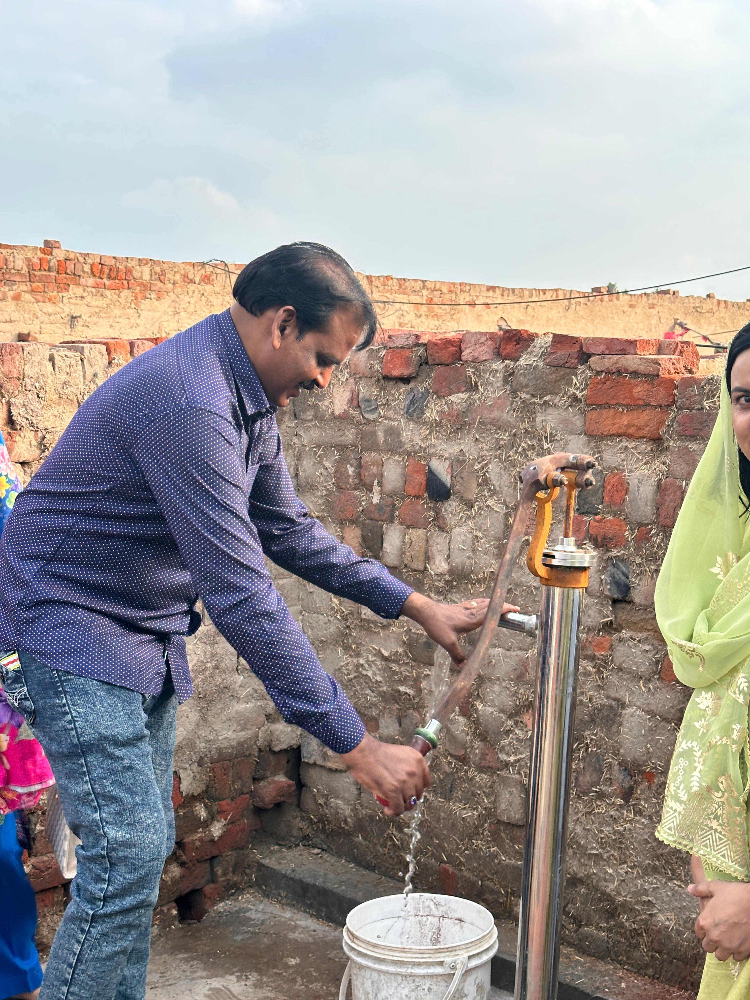

SHARING SMILES
HOPE BEHIND EVERY SMILE
HOPE BEHIND EVERY SMILE
Medical Camps & Clean Water Projects
Sharing Smiles Pakistan serves poor and remote communities through free medical camps and clean water projects, meeting urgent physical needs while demonstrating the love of Christ in practical ways.
Through healthcare outreach, medicine distribution, and safe water initiatives, we are bringing hope, dignity, and practical support to vulnerable families across Pakistan.
Community Care in Action




Why Medical Camps?
Many families in Pakistan cannot afford basic healthcare and often lack access to medical facilities. Children and adults frequently suffer from preventable illnesses such as dehydration, diarrhea, dysentery, infections, and seasonal diseases.
Through medical camps, volunteer doctors and healthcare workers provide consultations, basic treatments, health education, and medicine to individuals who would otherwise go without care.
These outreach efforts not only improve physical health but also demonstrate the compassion and love of Christ in tangible ways.
Why Clean Water Projects?
Many communities continue to rely on unsafe water sources, including contaminated groundwater and seasonal rainwater collection. Unsafe water contributes to disease, poor health, and ongoing hardship for families.
Through the installation of hand pumps and other clean water initiatives, Sharing Smiles Pakistan helps provide reliable access to safe drinking water for communities in need.
To date, more than 900 people have benefited from our clean water projects, bringing improved health and a better quality of life to families and villages.
What We Provide
Providing basic healthcare services and consultations for underserved communities.
Distributing essential medicines to individuals and families in need.
Partnering with healthcare professionals to deliver quality medical care.
Helping communities gain access to safe and reliable drinking water.
Installing water hand pumps in areas where clean water is difficult to obtain.
Matthew 25:36
Your support helps provide medical care, medicine, and safe water access to communities in need.
Together, we can improve health, prevent disease, and share the love of Christ through compassionate service.